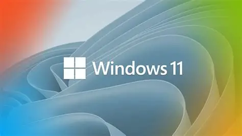

How to Stop Windows Update in 2 Minutes (3 Easy Ways)
Windows Updates are meant to improve your PC, but sometimes they pop up at the worst moments, eat bandwidth, or break something that was working. Below are three proven ways to stop them — from the quick temporary pause to a deeper, more permanent block.
1. Temporarily Pause Updates (Fastest and Built-In)
This is Microsoft’s own pause switch. It buys you a few days or weeks but Windows will eventually re-enable updates. Good for short breaks.
Steps:
- Press Windows Key + I to open Settings.
- Click Windows Update (bottom left).
- On the right, click Pause updates and choose how long (up to 5 weeks).
- Done — Windows Update won’t run until your chosen date expires.
Pros: Quick, safe, reversible.
Cons: Microsoft overrides it after the set time.
2. Disable the Windows Update Service (Semi-Permanent)
Turning off the actual service behind updates stops them cold until you turn it back on.
Steps:
- Press Windows Key + R, type
services.msc, and hit Enter. - In the Services list, scroll down to Windows Update.
- Double-click it. In the Startup type dropdown, select Disabled.
- Click Stop under Service status, then Apply and OK.
- Restart your PC.
Pros: Works until you manually re-enable the service.
Cons: Major version upgrades or future updates may silently switch it back on.
3. Use Group Policy or Registry (More Permanent)
This method essentially tells Windows “never check.” It’s harder for Microsoft to reverse, but still can be undone by big system upgrades.
Group Policy (Windows 10/11 Pro):
- Press Windows Key + R, type
gpedit.mscand hit Enter. - Go to: Computer Configuration → Administrative Templates → Windows Components → Windows Update → Manage end user experience.
- Double-click Configure Automatic Updates.
- Select Disabled, click Apply and OK.
- Restart your PC.
Registry (Windows Home):
- Press Windows Key + R, type
regeditand hit Enter. - Navigate to: HKEY_LOCAL_MACHINE\SOFTWARE\Policies\Microsoft\Windows\WindowsUpdate\AU (Create keys if they don’t exist.)
- Right-click, choose New → DWORD (32-bit) Value. Name it
NoAutoUpdate. - Double-click it and set Value data to 1.
- Restart your PC.
Pros: Strongest block; survives most reboots.
Cons: May break Windows Update UI; big version upgrades can still reset settings.
Final Thoughts
No method is truly 100% permanent because Microsoft can push updates with major builds. But these three options give you control — quick pause, semi-permanent service disable, or deeper Group Policy/Registry tweak. Always remember to re-enable updates periodically for security patches once you’re done.
Visitor Comments